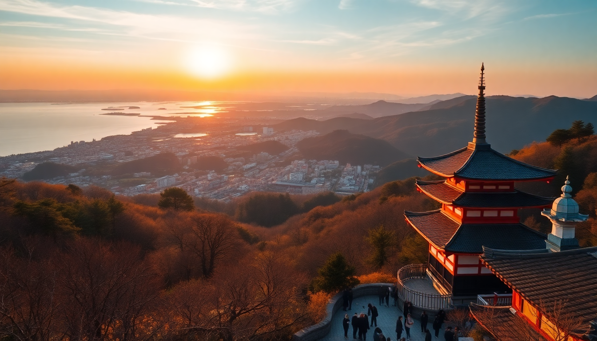

7-Day Japan Itinerary: Tokyo, Hakone & Kyoto

I mapped this 7-day Japan itinerary after three trips, each time trimming the fat. Tokyo, Hakone, and Kyoto in a week is tight, but doable if you move smart and skip the filler. Here's exactly how we did it — including what we'd change, what we'd skip, and where we actually ate.
Is seven days enough for Tokyo, Hakone, and Kyoto?
Barely, but yes — if you treat Hakone as a one-night pit stop rather than a full destination. We landed at Narita on a Tuesday morning and flew out of KIX the following Monday. That gave us three days in Tokyo, one night in Hakone, and two full days in Kyoto. You won't see everything, but you'll hit the heavy hitters without feeling like you're sprinting through a museum.
The trick is timing. We booked the 7:00 AM Shinkansen from Tokyo to Odawara, which put us in Hakone by 9:30. Then we took the 4:00 PM Romancecar from Hakone-Yumoto to Shinjuku on our way to Kyoto. That saved us a full day of transit.
What should I do on Day 1 in Tokyo?
We stayed at Hotel Gracery Shinjuku — the Godzilla hotel — purely for the novelty. Location-wise, it's fine. The room was small (standard Tokyo), but the Kabukicho neighborhood is loud at night. If I did it again, I'd book Hotel Century Southern Tower instead. Same area, quieter, better views.
Day 1 was jet-lag recovery, so we kept it loose:
- Walked through Meiji Jingu in the morning. Crowded but the forest path is genuinely calming.
- Grabbed lunch at Ichiran Ramen in Shibuya. Yes, it's a chain. Yes, it's still good. The solo booth setup is perfect for tired travelers.
- Wandered Shibuya Crossing and the surrounding alleys. Skip the Starbucks overlook line; go to Magnet by Shibuya 109 rooftop for 500 yen — no queue.
- Dinner at Omoide Yokocho (Piss Alley) in Shinjuku. We ate at a tiny yakitori joint called Kushidokoro Ishi. Cash only, no English menu, best chicken skin I've ever had.
Where should I go on Day 2 in Tokyo?
Day 2 was our big sightseeing day. We started early at Tsukiji Outer Market. The inner market moved to Toyosu, but the outer stalls are still packed with street food. Try the tamago at Yamacho and the scallop skewers. Skip the overpriced uni — it's not worth 1,500 yen for two bites.
From there we took the subway to Asakusa. Senso-ji Temple is a zoo by 10 AM, but the approach street (Nakamise-dori) has good souvenirs and fresh ningyo-yaki (little bean-paste cakes). We ducked into Hoppy Street for lunch — a covered alley of izakayas. Try Daikokuya for tendon (tempura rice bowl).
Afternoon: teamLab Planets in Toyosu. Book tickets a month ahead. It's a 60-minute walk-through of digital art installations. The water room is the highlight. Wear shorts — you'll be ankle-deep in water.
Dinner was a last-minute reservation at Ramen Nagi in Shinjuku. Their butao ramen is richer than Ichiran. Expect a 20-minute line.
Is Hakone worth the detour?
Yes, but only if you do it right. We spent one night at Hakone Gora Onsen — a traditional ryokan with private baths. It cost about $400 per person with dinner and breakfast included. Worth every yen. The kaiseki dinner was a 12-course parade of local specialties: sashimi, sukiyaki, grilled fish, and a tiny pot of tofu that simmered at the table.
Our route: Odawara Station → Hakone Tozan Railway to Gora → cable car to Sounzan → ropeway to Owakudani (sulfur vents and black eggs) → pirate ship across Lake Ashi. The whole loop took about 4 hours. The pirate ship is cheesy but the lake views of Mount Fuji are legit.
Skip the Hakone Open-Air Museum if you're short on time. It's fine, but the sculptures aren't worth losing your window for the ropeway.
We took the 4:00 PM Hakone Tozan Bus from Moto-Hakone to Hakone-Yumoto, then the Odakyu Romancecar to Shinjuku. From there we grabbed the Shinkansen to Kyoto. Arrived at Kyoto Station by 8:30 PM.
What's the best way to spend Day 4 and 5 in Kyoto?
We stayed at The Millennials Kyoto — a capsule hotel near Shijo. It's nicer than it sounds: private pods, a shared lounge with free beer for an hour each evening, and lockers big enough for a carry-on. Location is perfect for walking to Pontocho and Nishiki Market.
Day 4 morning: Fushimi Inari before 7 AM. We were there at 6:30 and had the first kilometer of torii gates almost to ourselves. By 8, it was shoulder-to-shoulder. Walk at least to the Yotsutsuji intersection for the city view.
Day 4 afternoon: Kiyomizu-dera. The temple itself is under renovation (scaffolding), but the hillside views and the path through Sannenzaka and Ninenzaka are lovely. We stopped for matcha soft serve at Tsujiri near Kiyomizu.
Day 5: Arashiyama. Bamboo Grove at 7 AM again — same advice as Fushimi. After the grove, walk to Tenryu-ji Temple and its garden. Then crossed the Togetsukyo Bridge and had soba at Soba no Mi Yoshimura. The buckwheat noodles are handmade, and the window seats overlook the river.
Afternoon: Kinkaku-ji (Golden Pavilion). It's 20 minutes by bus from Arashiyama. The temple is literally a gold-leaf-covered building in a pond. Photos don't capture how gaudy-beautiful it is. Skip Ryoan-ji unless you really love rock gardens.
Evening: Pontocho Alley for dinner. We ate at Kobe Beef Kaiseki 511 — pricey but the wagyu melted. Reservations required.
What should I eat in Kyoto that isn't kaiseki?
Kaiseki is great, but Kyoto has better everyday food. Our hits:
- Nishiki Market — walk through and eat as you go. Kuri Kuri for chestnut paste, Aritsugu for knife-grilled fish skewers, and Kyo Katsu for a cheap katsu sando.
- Men-ya Inoichi near Kyoto Station — best ramen we had in Japan. The shio broth is delicate, not heavy. 15-minute wait at lunch.
- Obanzai Kyo — a tiny spot near Shijo serving obanzai (Kyoto-style home cooking). No English menu, point at what looks good. The simmered daikon and fried tofu are perfect.
How do I get around without wasting time?
Suica card for Tokyo (load it on your iPhone Wallet — no physical card needed). JR Pass didn't pay off for this itinerary unless you're also going to Hiroshima. We bought individual Shinkansen tickets at the station.
For Tokyo → Hakone, the Hakone Free Pass (2-day) covers the Tozan Railway, cable car, ropeway, and bus. It's 6,100 yen and saves about 1,500 yen versus buying separate tickets.
For Hakone → Kyoto, we took the Romancecar to Shinjuku, then the Shinkansen from Tokyo Station. Total time: about 3.5 hours. Direct Shinkansen from Odawara to Kyoto exists, but we wanted the Romancecar experience once.
Kyoto buses are slow. We walked or took taxis (short rides cost around 1,000–1,500 yen). The Kyoto City Bus One-Day Pass is 700 yen but only worth it if you're doing 4+ rides.
FAQ
Is this itinerary too rushed for a first-timer? It depends on your travel style. If you like slow mornings and spontaneous detours, add a day to Tokyo and skip Hakone. If you're okay with early starts and packed days, this rhythm works. We averaged 20,000 steps a day and never felt frantic.
Should I buy a JR Pass for this trip? No. At current prices (about $340 for 7 days), you'd need a round-trip Tokyo–Kyoto Shinkansen plus a side trip to break even. Our total Shinkansen cost was about $180 per person. The JR Pass would have been wasted.
Can I see Mount Fuji from Hakone? On a clear day, yes. We saw it from the ropeway and from Lake Ashi. Winter and early spring have the best visibility. Summer is hit-or-miss. Check the Fuji Visibility Forecast before you book your ryokan.
Conclusion
- Start early — Fushimi Inari and Bamboo Grove before 8 AM are empty. After 9, they're theme parks.
- Stay one night in Hakone — the ryokan experience is worth the cost and the detour. Book a room with a private bath.
- Skip the JR Pass for this loop. Individual tickets are cheaper and more flexible.
- Eat at the small places — chain ramen is fine, but the 6-seat soba shops and cash-only izakayas are the real deal.
- Pack light — you'll change hotels three times. One carry-on and a backpack is plenty.